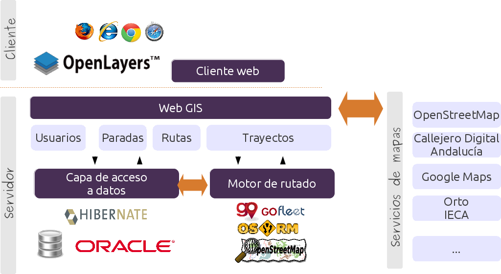

SIG Libre para la Gestión de Rutas Escolares
Viernes, 28 de marzo de 2014
VIII Jornadas SIG Libre de Girona
Sobre mí
Moisés Arcos  @moiarcsan
@moiarcsan
Desarrollador GIS y miembro de:
Introducción
Definición del problema que nos encontramosIntroducción
¿Qué nos encontramos?
Organización encargada de:
- Contratar el transporte público
- Planificar las rutas escolares
Introducción
¿Cómo lo hacen?
Mediante rutas años anteriores
¿Cómo planificar las rutas?
Descripción de la situación de partida¿Cómo planificar las rutas?
Conjunto de datos
- Paradas y Centros
- Trayectos I/V
- Rutas
¿Cómo planificar las rutas?
Comprensión de la información
Unidad mínima --> PARADA
Itinerario pasando por paradas --> TRAYECTO
Conjunto de trayectos --> RUTA
¿Cómo planificar las rutas?
Comprensión de la información
3 paradas
- 2 Paradas para recoger alumnos
- 1 Centro destino donde dejarlos
Trayecto de Ida
¿Cómo planificar las rutas?
Comprensión de la información
3 paradas
- 2 Paradas para recoger alumnos
- 1 Centro destino donde dejarlos
Trayecto de Ida
¿Cómo planificar las rutas?
Comprensión de la información
6 paradas
- 4 Paradas para dejar alumnos
- 2 Centros destinos donde recogerlos
Trayecto de Vuelta
¿Cómo planificar las rutas?
Comprensión de la información
Primer Trayecto de Ida
Segundo Trayecto de Ida
Trayecto de Vuelta
RUTA
¿Cómo lo automatizamos?
Solución funcional al planteamiento¿Cómo lo automatizamos?
Configuración de la bolsa de paradas
Buscamos las paradas --> Buscador
Añadimos a la bolsa de paradas
¿Cómo lo automatizamos?
Configuración de los trayectos
Ordenamos las paradas
Tiempos
Distancias
¿Cómo lo automatizamos?
Configuración de la ruta
Numero de alumnos por parada
Tipo de vehículo
Tiempo total
Distancia total
Costes de la ruta
¿Qué componentes usamos?
Arquitectura de la app¿Qué componentes usamos?
¿Qué aporta un SIG Libre?
Los beneficios de usar una solución libre- OpenLS implementado en GoFleetLS
- Rutado con OSRM
- Cliente Web OpenLayers
Conclusiones
Mejora en los tiempos y distancias
Servicio más eficiente
Mejor experiencia de planificación
Ahorro en los costes
Agradecimientos
Gracias por vuestra atención
Licencia

CC-BY-SA